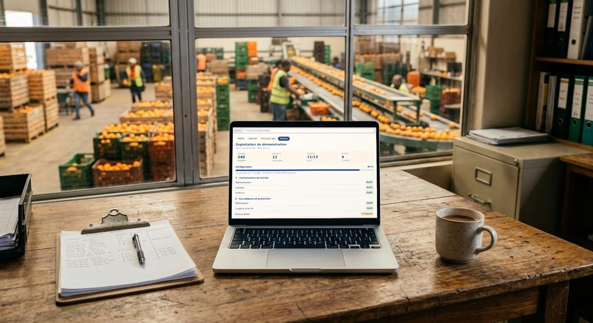
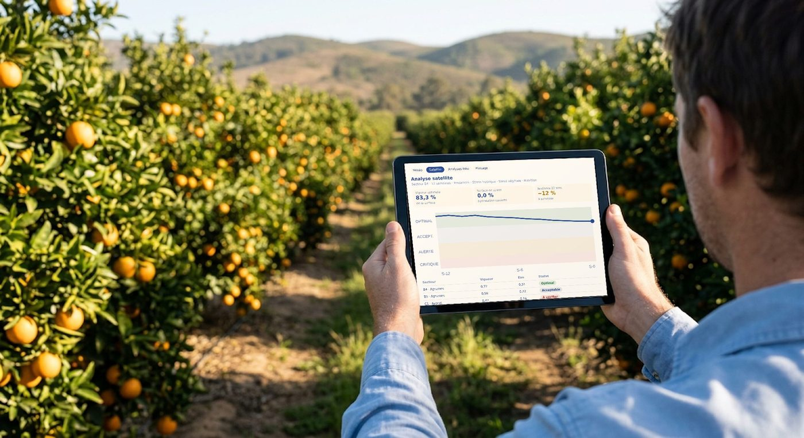
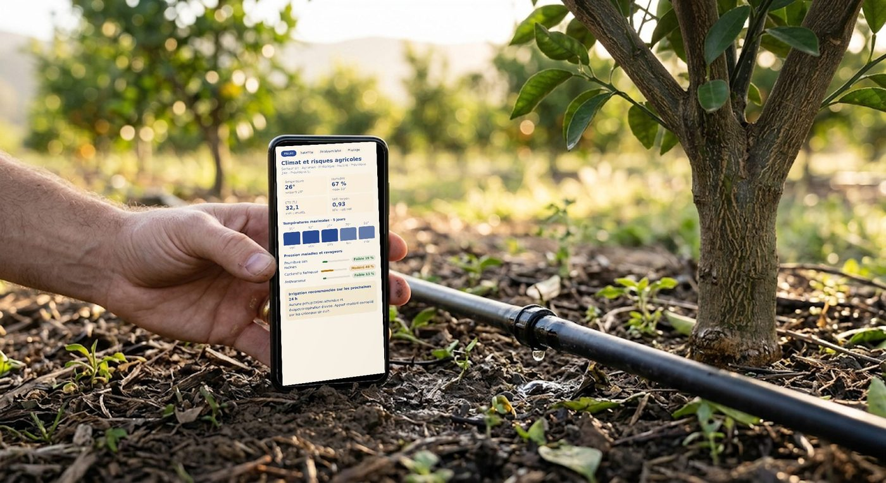
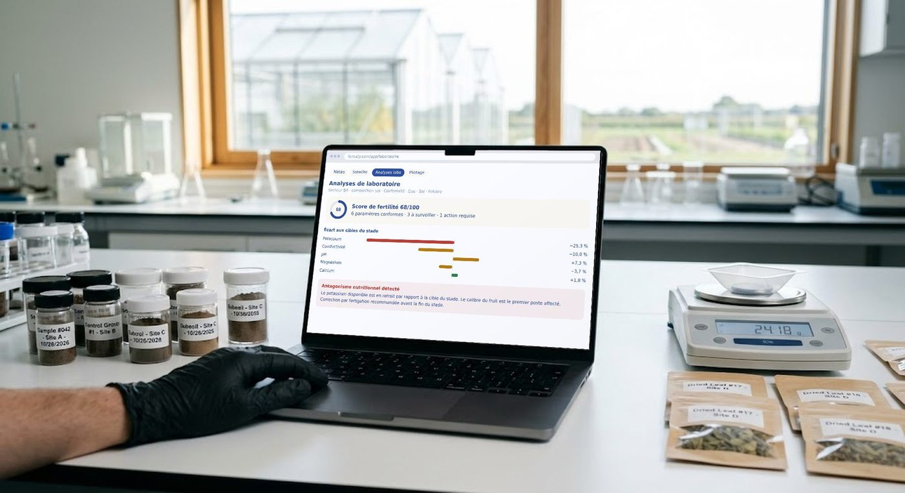

Irrigation recommandée sur les prochaines 24 hAucune précipitation attendue et évapotranspiration élevée. Apport modéré conseillé sur les créneaux de nuit.
Vigueur stable en phase productiveLa baisse conjointe des deux indices correspond à la réallocation des ressources vers le fruit. Le secteur C1 fait exception et remonte en tête des priorités.
firmaty.com/app/laboratoire
MétéoSatelliteAnalyses laboPilotage
Analyses de laboratoire
Secteur B4 · composition sol · Conformité · Eau · Sol · Foliaire
Score de fertilité 68/1006 paramètres conformes · 3 à surveiller · 1 action requise
Écart aux cibles du stade
Potassium
−25,3 %
Conductivité
−10,0 %
pH
+7,3 %
Magnésium
−3,7 %
Calcium
+1,8 %
Antagonisme nutritionnel détectéLe potassium disponible est en retrait par rapport à la cible du stade. Le calibre du fruit est le premier poste affecté. Correction par fertigation recommandée avant la fin du stade.
firmaty.com/app/pilotage
MétéoSatelliteAnalyses laboPilotage
Exploitation de démonstration
Agrumes et avocat · plein champ
Surface340hectares
Secteurs12configurés
Services11/12actifs
Actions4à traiter
Configuration90 %
11 services sur 12 actifs · 4 actions à traiter cette semaine
1 · Connaissance du terrain
GéolocalisationActif
CulturesActif
SecteursActif
2 · Surveillance et protection
MétéorologieActif
Imagerie satelliteActif
Phytosanitaire4 risques
3 · Nutrition et irrigation
FertilisationActif
Analyses laboActif
Programmes1 action
SERVICE 01 · MÉTÉO
Climat et pression sanitaire
Conditions en temps réel, prévisions et recommandation d'irrigation calculée à partir de l'évapotranspiration et du déficit de pression de vapeur. La pression maladies et ravageurs est calculée en continu pour la culture et son stade en cours.
ExempleSur le secteur B4, l'évapotranspiration cumulée atteint 32,1 mm sur cinq jours sans pluie annoncée. La plateforme conseille un apport modéré sur les créneaux de nuit et signale une pression cochenille en hausse.
Irrigation recommandée sur les prochaines 24 hAucune précipitation attendue et évapotranspiration élevée. Apport modéré conseillé sur les créneaux de nuit.
SERVICE 02 · SATELLITE
Analyse satellite
Chaque secteur est suivi image après image, avec des seuils agronomiques qui distinguent l'optimal, l'acceptable et le critique. La tendance sur douze semaines révèle ce qu'une image isolée ne montrera jamais.
ExempleLa vigueur de B4 recule de 12 % en douze semaines mais reste en zone optimale. La baisse conjointe des deux indices correspond à la réallocation des ressources vers le fruit. C1, lui, remonte en tête des priorités.
Vigueur stable en phase productiveLa baisse conjointe des deux indices correspond à la réallocation des ressources vers le fruit. Le secteur C1 fait exception et remonte en tête des priorités.
SERVICE 03 · ANALYSES LABO
Analyses de laboratoire
Vos rapports sont importés et confrontés aux cibles de la culture. La plateforme détecte les antagonismes nutritionnels, ces blocages où un élément présent en quantité suffisante devient inaccessible à la plante à cause d'un autre.
ExempleScore de fertilité de 68/100 : six paramètres conformes, trois à surveiller et une action requise. Le potassium est à 25,3 % sous la cible du stade.
Sol
Foliaire
Eau et sondes
Équilibre cationique
Conformité
firmaty.com/app/laboratoire
MétéoSatelliteAnalyses laboPilotage
Analyses de laboratoire
Secteur B4 · composition sol · Conformité · Eau · Sol · Foliaire
Score de fertilité 68/1006 paramètres conformes · 3 à surveiller · 1 action requise
Écart aux cibles du stade
Potassium
−25,3 %
Conductivité
−10,0 %
pH
+7,3 %
Magnésium
−3,7 %
Calcium
+1,8 %
Antagonisme nutritionnel détectéLe potassium disponible est en retrait par rapport à la cible du stade. Le calibre du fruit est le premier poste affecté. Correction par fertigation recommandée avant la fin du stade.
SERVICE 04 · PILOTAGE
Pilotage de l'exploitation
La vue d'ensemble : secteurs configurés, services actifs, actions à traiter. Vous voyez d'un coup d'œil où en est chaque partie de l'exploitation et ce qui demande votre attention cette semaine.
Exemple340 hectares, 12 secteurs configurés, 11 services sur 12 actifs et 4 actions à traiter cette semaine.
Connaissance du terrain
Surveillance
Nutrition et irrigation
Production
firmaty.com/app/pilotage
MétéoSatelliteAnalyses laboPilotage
Exploitation de démonstration
Agrumes et avocat · plein champ
Surface340hectares
Secteurs12configurés
Services11/12actifs
Actions4à traiter
Configuration90 %
11 services sur 12 actifs · 4 actions à traiter cette semaine
1 · Connaissance du terrain
GéolocalisationActif
CulturesActif
SecteursActif
2 · Surveillance et protection
MétéorologieActif
Imagerie satelliteActif
Phytosanitaire4 risques
3 · Nutrition et irrigation
FertilisationActif
Analyses laboActif
Programmes1 action
Interfaces reconstituées avec des données de démonstration. Aucune donnée d'exploitation réelle n'est affichée.
En situation
Au bureau comme au champ
La même plateforme sur ordinateur, tablette et téléphone, là où les décisions se prennent.

PilotageAu bureau de la station, la vue d'ensemble des secteurs et des actions de la semaine.

SatelliteEntre les rangs, la tendance de vigueur du secteur sous les yeux.

ClimatAu pied de l'arbre, la recommandation d'irrigation des prochaines 24 heures.

LaboratoireAu labo, les analyses confrontées aux cibles du stade dès leur import.
Les services
Douze services, organisés en quatre familles
Chaque service s'active secteur par secteur. Vous démarrez avec ce dont vous avez besoin et vous complétez ensuite.
Connaissance du terrain
Géolocalisation des parcelles
Cultures en place
Découpage en secteurs
Surveillance et protection
Météorologie
Imagerie satellite
Phytosanitaire
Nutrition et irrigation
Fertilisation
Analyses de laboratoire
Programmes
Production
Le suivi de la production complète la vue d'ensemble de l'exploitation. Nous détaillons ce module lors de la démonstration, selon vos cultures.
Au quotidien
La synthèse du jour
Chaque matin, la plateforme résume l'état de l'exploitation : secteurs suivis, score de conformité, actions à traiter, et ce qui a été écarté.
Synthèse du jourMise à jour 06:00
Secteurs12/12
Conformité68/100
Actions2
B4
Agrumes
Baisse de vigueur confirmée physiologique par les conditions de la période.
Aucune action
C1
Avocat
Potassium à 25 % sous la cible du stade. Correction par fertigation.
À corriger
D2
Agrumes
Pression cochenille en hausse sur les prochaines 48 heures.
L'historique satellite est rétroactif : nous analysons vos secteurs sur les mois écoulés, sans rien installer et sans attendre. Dites-nous ce que vous pilotez, on vous montre ce que la plateforme en tire.